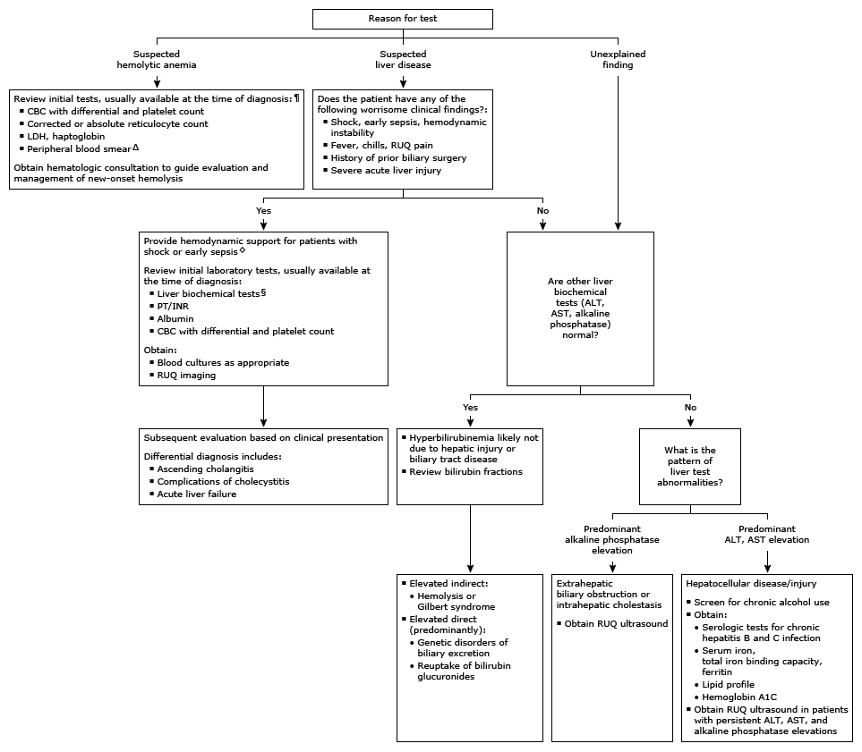

CBC: complete blood count; LDH: lactate dehydrogenase; RUQ: right upper quadrant; PT: prothrombin time; INR: international normalized ratio; ALT: alanine aminotransferase; AST: aspartate aminotransferase.
* The normal reference range for total bilirubin is approximately 0.2 to 1.2 mg/dL (3.4 to 20.5 micromol/L), for direct bilirubin approximately 0.1 to 0.4 mg/dL (1.7 to 6.8 micromol/L), and for indirect bilirubin approximately 0.1 to 0.8 mg/dL (1.7 to 13.6 micromol/L). Interpretation of a specific abnormal test result should be based upon the reference range reported with that result. Bilirubin is measured along with other liver biochemical tests, usually available at the time of diagnosis.
¶ For additional information, refer to the UpToDate algorithm on initial evaluation of low hemoglobin, hematocrit.
Δ Review of a peripheral blood smear by an experienced individual may identify abnormalities not detected by automated machines.
◊ Life-saving interventions should not be delayed while awaiting the results of diagnostic testing.
§ Liver biochemical tests include ALT, AST, alkaline phosphatase, and total and direct bilirubin.